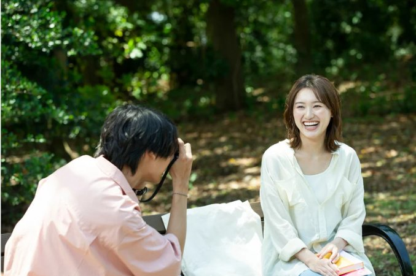
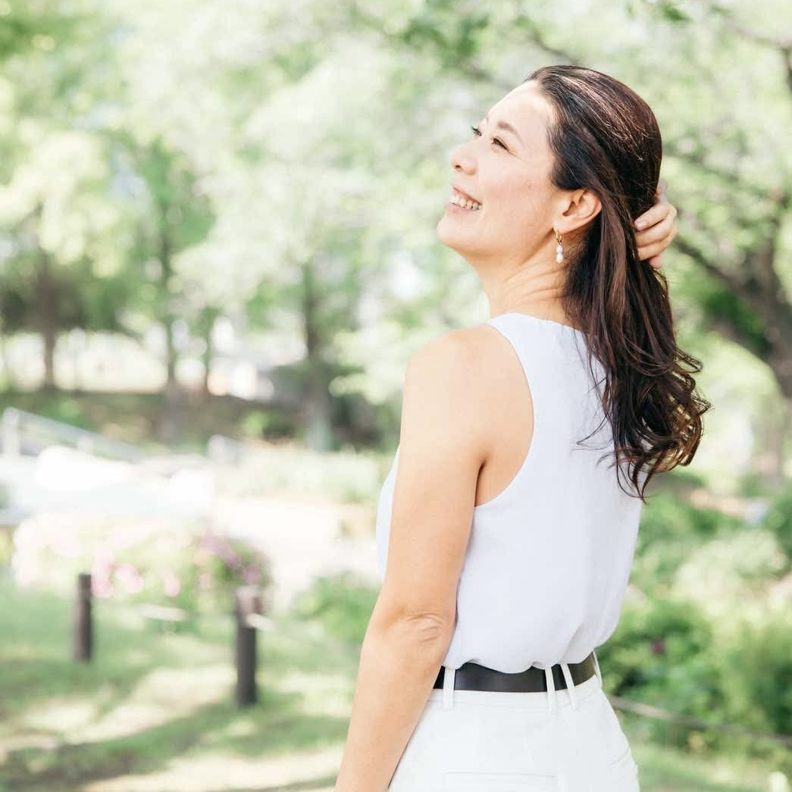
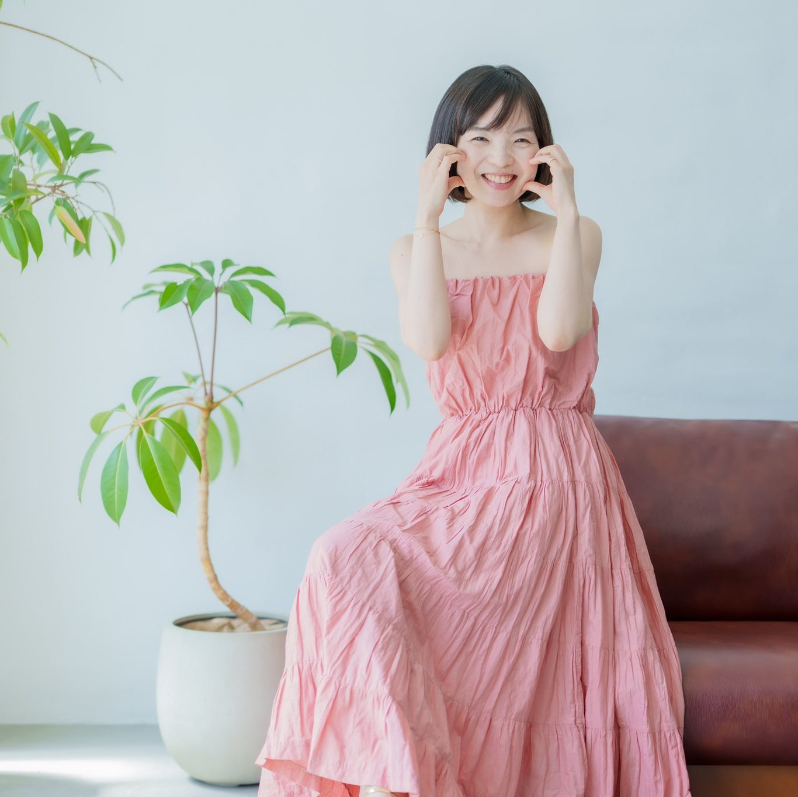
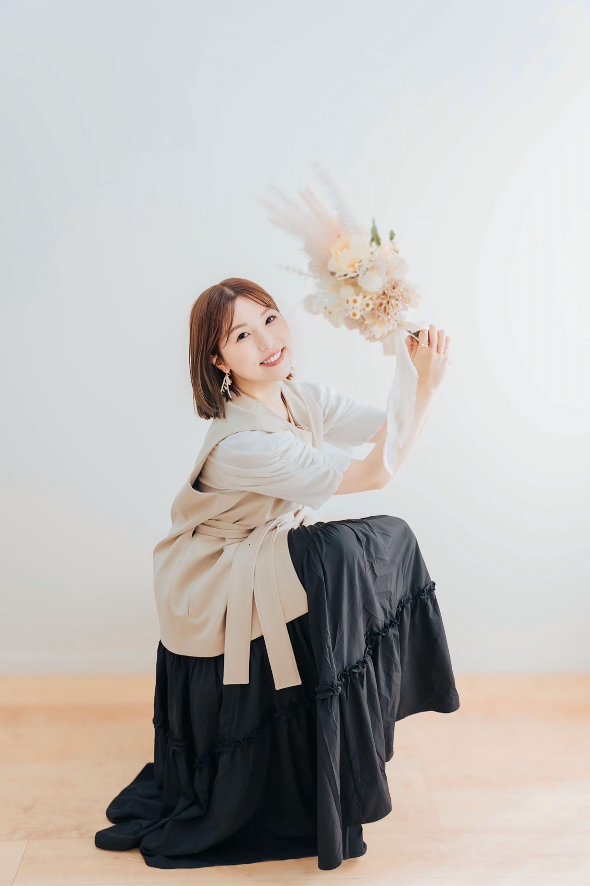

Your Feelings
大切に想い合える人に
出会いたい
- このままでいいのか、どこかに迷いがある
- 相手に気を使っているのに、空回りしてしまう
- 婚活用の自分をつくりたくない
- この人だと思える人に、出会えない
- 今更、出会いを求めるのもきっかけがない
だけど「このままでいいのか」
そんな漠然としたモヤモヤを手放しませんか？
Change
マッチングだけじゃない
ハルカゼで起きる変化
- 01飾らない自分のままで、ちゃんと魅力が伝わる
- 02無理に合わせなくても、自然に会話が続く
- 03自分の軸がわかって、「この人かも」に気づける
Steps
ハルカゼのサポート
-
STEP1
自分の魅力と、求める相手がわかる
「どんな人がいいかわからない」から始めて大丈夫です。
- 価値観整理
- 魅力・強み発見
- 婚活プラン作成
PHOTO -
STEP2
自分らしい魅力が、見た目とプロフィールで伝わる
「婚活用の自分」はつくりません。今のあなたの良さが伝わる形にします。
- Visionボード：結婚したあとの毎日を写真や言葉で描いて、目指す姿をはっきりさせます
- 骨格診断・お買い物同行：似合う服の形を知って、実際のお店で一緒に選びます
- 服装・メイクレッスン：お見合いやデートで、自分らしく見える装いを練習します
- 写真撮影：一番自然な表情を引き出す撮影で、プロフィール写真をつくります
- プロフィール作成：あなたの言葉を活かしながら、人柄が伝わる文章に仕上げます

PHOTO -
STEP3
数を気にせず、「この人かも」に気づける
申し込みの上限を気にしなくていいから、出会いのチャンスに制限をかけない。
- IBJの10万人以上から出会える：お見合い料や申し込み数の上限がないので、気になる人に気軽に申し込めます
- お見合い・交際サポート：お見合いの前後に振り返り、「なんとなく違う」の理由を一緒に確かめます
- 伝える技術レッスン：気を使いすぎず、自然に会話が続く話し方・聞き方を練習します
PHOTO
だけど、ハルカゼの願いは
あなたが選んだ人と、
ずっと笑っていてくれること
「結婚相談所で出会って、本当にうまくいく？」
そんな不安にも、ちゃんと向き合います。
ハルカゼの婚活は、出会って終わりではありません。
結婚したあとの暮らしまで考えて、それぞれの分野の専門コーチに相談できます。
こんなことを相談できます
-
PHOTO
COACH 01
スミス 知美パートナーシップ
ライフコーチ「価値観がちがったとき、どう話し合えばいい？」
-

PHOTOCOACH 02
本間 知尋パートナーシップ
ライフコーチ -

PHOTOCOACH 03
エマセクシャルウェルネスコーチ
精神対話士 -

PHOTOCOACH 04
TOMOMIイメージコンサルタント
Profile
成婚をゴールにしない、
あなたのしあわせが続くように。
あなたが、あなたらしく生きれるように。
毎日がより色鮮やかになるように。
成婚に導くサポートはもちろん、それ以上に、「婚活をしてよかった」心からそう思ってもらえる時間になるようにサポートします。
石神りさ
マッチングプランナー／ハルカゼ代表
これまでの経験を、あなたのサポートに
金融機関の窓口からキャリアをスタート、ベンチャー企業の法人営業、プライム市場上場の経営コンサルティング会社での経営者サポート、ライフワークとして、場作りワークショップの開催と、コーチングの学び。プライベートでは、3児の母として結婚生活や子育てのリアルから、恋愛と結婚で大きく変わった気づきや学びもお伝えしています。
代表のストーリーを読むPrice
料金
金額はすべて税込です。どのプランも、お見合い料は無料です。
Trial Planお試しプラン
月会費5,500円
１ヶ月お試し入会（お見合い成立または継続利用時は標準プランのいずれかに移行）
- 申込み30件/月、お見合い料０円
- 婚活ロードマップ作成
- プロフィール添削
- LINE・電話相談、個別面談（オンライン可）
Light Planライトプラン
月会費11,000円
- 入会金
- 33,000円
- 登録料
- 22,000円
- 成婚料
- 165,000円
- お見合い料
- 無料
- プロフィール写真撮影
- お見合い申し込み 月100件
- プランナーよりご紹介
- お見合い後フィードバック
- 定期面談 月1回
- プロフィール作成
Personal Planパーソナルプラン一番人気
月会費15,800円
- 入会金
- 33,000円
- 登録料
- 33,000円
- 成婚料
- 230,000円
- お見合い料
- 無料
- お見合い申し込み 月200件
- プランナーよりご紹介
- お見合い後フィードバック
- 定期面談 月2回
- プロフィール作成
- プロフィール写真撮影（スタジオ or ロケーション）
- 選べるサポート イメージコンサルタントによるお買い物同行or骨格診断orパーソナルカラー診断
- LAB 各講座
- お見合いアナリティクス診断
お見合い料0円・申し込み数の上限なし
CAMPAIGN
他社乗り換え割引キャンペーン
33,000円 OFF
MONITOR
モニター募集のお知らせ
各月1名
- 費用
- 110,000円（税込）※入会金・諸経費・月会費・成婚退会料含む
- 期間
- 8か月間
- プロフィール写真撮影
- お買い物同行
- プロフィール作成
- ビジョンボード作成
- 定期面談8回
Flow
成婚までの5ステップ
-
01
無料相談（オンラインOK）
今の気持ちや、これまでの婚活のことをお聞きします。あなたの魅力のヒントと、ハルカゼでの進め方をお伝えします。
-
02
ご入会
内容に納得していただけたら、お手続きへ。
必要書類
- 身分証明書のコピー
- 住民票
- 独身証明書（3か月以内に取得した原本）
- 卒業証明書のコピー（短大卒以上の方）
- 国家資格免許証のコピー
- 収入証明書
- 勤務先確認書類のコピー
-
03
お見合い開始
IBJ 10万名超からマッチング。事前準備を徹底サポート
-
04
プレ交際・本交際
定期面談で関係の深め方を伴走。悩みをすぐに相談できる
-
05
成婚・卒業
プロポーズのタイミングや準備もサポート
FAQ
よくある質問
Q婚活がはじめてでも大丈夫ですか？
A大丈夫です。「どんな人がいいかわからない」ところから、一緒に整理していきます。
Q何を着たらいいかまったくわかりません。
Aイメージコンサルタントによる骨格診断やお買い物同行で、似合うものを一緒に見つけながら、あなたの良さが活きる装いを大切にしています。また、デートやお見合いのお洋服について、面談時や、LINEからでも都度ご相談を受けています。
Q仕事が忙しくても続けられますか？
A面談はオンラインでもでき、ふだんの相談はLINEで受けています。あなたのペースに合わせて進めます。
Q大阪以外に住んでいても入会できますか？
Aオンラインで全国対応しています。関東、東海など大阪に限らず、他府県からも入会いただいております。
Q無料相談で、入会をすすめられませんか？
A当日の決断を促すことや、強引な勧誘は行いませんのでご安心ください。
Last Message
婚活用の自分をつくらなくていい。
誰かに選ばれるために、がんばらなくていい。
自分の魅力を知って、自分らしく出会えたら、
選ぶ相手も、選んだあとの毎日も、きっと変わります。
この人を選んだ
私の人生が、もっと好きになった。
そんな出会いを、ハルカゼで。
まずは無料相談で、今の気持ちを聞かせてください。
オンラインでも受け付けています。